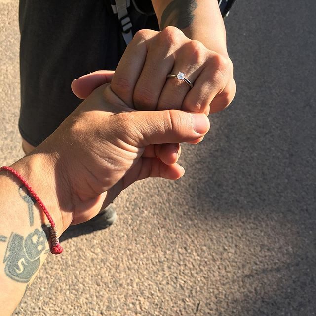
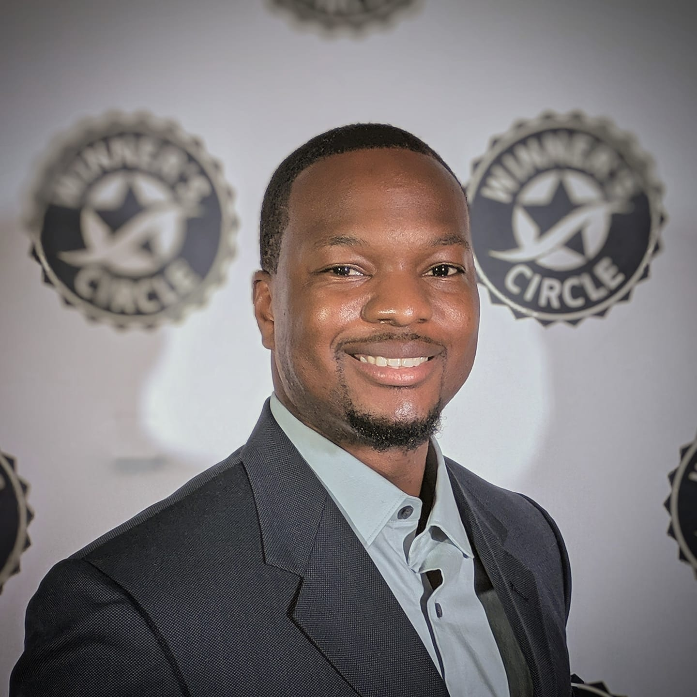

Latest News



Our Purpose
The purpose of Beta Sigma Kappa Fraternity, Incorporated is to help men strengthen their professional and leadership skills in order to be a positive influence within undeserved communities. This is done by studying the links between African and Latino communities, identifying the challenges faced, and sharing this knowledge within the community.
Latest News
Brother Spotlight
"To lead you must be willing to serve. You must serve your way to success." - Najee Long